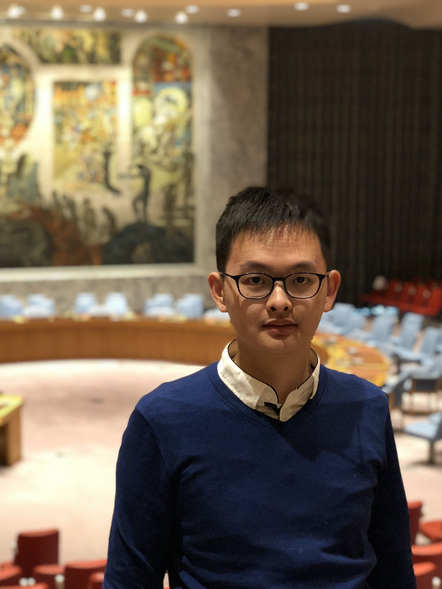

|  | Ph.D. student Computer Science, University of California, Davis
E-mail: jiiwang at ucdavis dot edu |
I am currently a third year Ph.D. student in Computer Science at UC Davis. Before moving to Davis, I earned my Master's degree at Carnegie Mellon University and Bachelor's degree at Nanjing University.
At Davis, I am fortunate to work with Prof. Zhaojun Bai on numerical linear algebra and its applications. At CMU, I collaborated with Prof. Clarie Le Goues on automatic program repair by leveraging SMT in semantic search.
My research interests lie in numerical algorithms and its applications, and software engineering.
Lead Teaching Assistant: ECS-122A Algorithm Design and Analysis (Discussion Notes), Spring 2021.
Lead Teaching Assistant: ECS-20 Discrete Mathematics for Computer Science (Discussion Notes), Winter 2021.
Lead Teaching Assistant: ECS-122A Algorithm Design and Analysis, Fall 2020.
Lead Teaching Assistant: ECS-122A Algorithm Design and Analysis, Spring 2020.
Lead Teaching Assistant: ECS-20 Discrete Mathematics for Computer Science, Winter 2020.
Lead Teaching Assistant: ECS-160 Software Engineering, Fall 2019.
Lead Teaching Assistant, ECS-122A Algorithm Design and Analysis (Discussion Notes), Spring 2019.